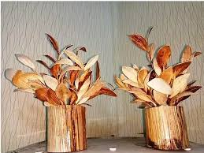
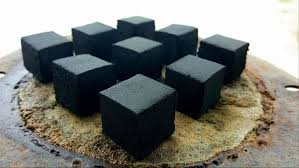
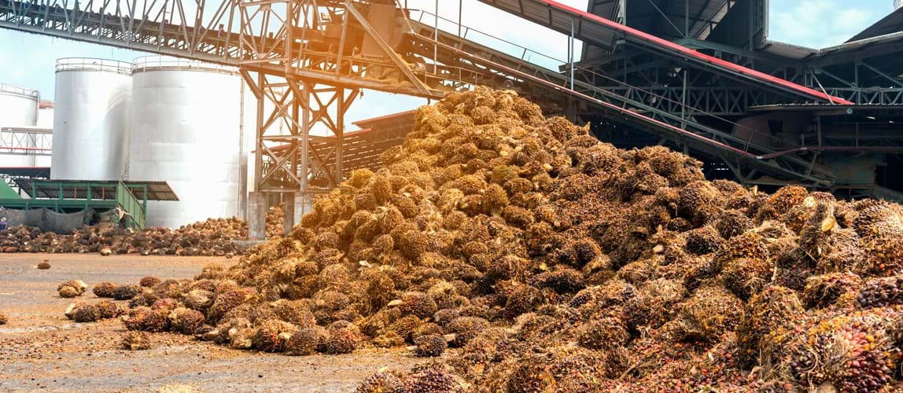
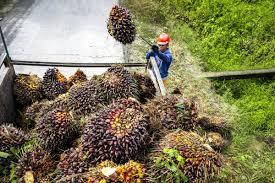

Pemanfaatan Pelepah Sawit Menjadi Kerajinan
Pelepah sawit dapat diolah menjadi berbagai produk kreatif yang memiliki nilai jual tinggi.
Baca SelengkapnyaInformasi terbaru mengenai pemanfaatan limbah kelapa sawit.

Pelepah sawit dapat diolah menjadi berbagai produk kreatif yang memiliki nilai jual tinggi.
Baca Selengkapnya
Limbah sawit dapat dimanfaatkan sebagai sumber energi terbarukan.
Baca Selengkapnya
Inovasi teknologi membantu meningkatkan nilai tambah limbah perkebunan.
Baca Selengkapnya
Pendekatan ekonomi sirkular mendukung industri yang lebih berkelanjutan.
Baca Selengkapnya